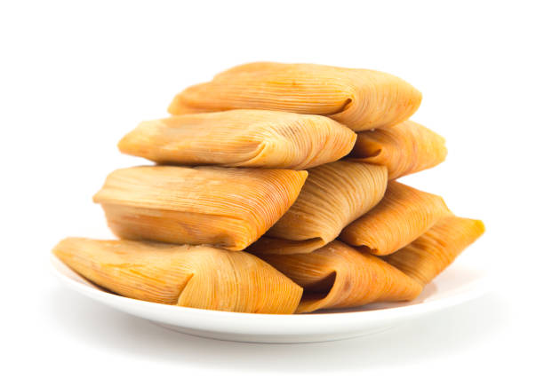

Tamales!

The masa for these Mexican red tamales is made with lard and chicken broth. They are stuffed with a filling of shredded chicken and a spicy red sauce with ancho and mulato chiles.
Ingredients
- Corn husks
- 1 1/4 pounds skinless, boneless chicken breast halves
- 1 pinch salt to taste
- 1/3 cup ancho chiles, stemmed and seeded
- 1 cup mulato chiles, stemmed and seeded
- 1 clove of garlic
- 8 cumin seeds
- 1/2 pound lard
- 1 pound masa harina
- 3 cups chicken broth
- 1 1/2 teaspoon baking powder
How to make Tamales Step-by-Step
- Place corn husks in a bowl, cover with boiling water, and soak for a few hours. Drain, place on a work surface, and cover with a clean, damp towel.
- Place chicken in a pot, season with salt, and cover with water. Bring to a boil over medium-high heat, reduce heat, cover, and simmer until chicken is cooked through, 20 to 25 minutes. Drain chicken and shred with 2 forks.
- Heat a griddle over medium heat and toast ancho and mulato chiles until fragrant, 3 to 5 minutes. Place in a bowl and cover with boiling water. Soak until soft, about 25 minutes. Combine ancho and mulato chiles, garlic, cumin seeds, and about 1/2 cup of the soaking water in a blender; blend until a thick, smooth, mole-like sauce forms, adding more water if necessary.
- Heat 1 tablespoon lard in a saucepan over medium heat and add the sauce; cook for 3 to 5 minutes. Add shredded chicken and cook until flavors are combined and chicken is heated through, about 5 minutes.
- Place remaining lard in a large bowl; beat with an electric mixer until creamy. Add masa harina, chicken broth, baking powder, and 1 1/2 teaspoon salt, and beat until all ingredients are well combined. Test if the masa is ready by dropping a small ball of masa into a glass of cold water; if it floats, it's ready, if not, keep working the dough a little longer.
- Select 1 wide corn husk. Spread about 2 tablespoons masa mixture onto the the corn husk, filling it up to 2 inches from the bottom and 1/4 inch from the top. Add 1 tablespoon of the chicken filling in the center of the masa mixture. Fold sides of husk together, one over the other. Fold the bottom of the husk over the seam of the 2 folded sides. Repeat with remaining husks.
- Place a steamer insert into a saucepan and fill with water to just below the bottom of the steamer. Bring water to a boil. Add tamales with the open side up and cook until filling is heated through and separates from the husk, about 1 hour. Let tamales rest for 15 minutes before serving.